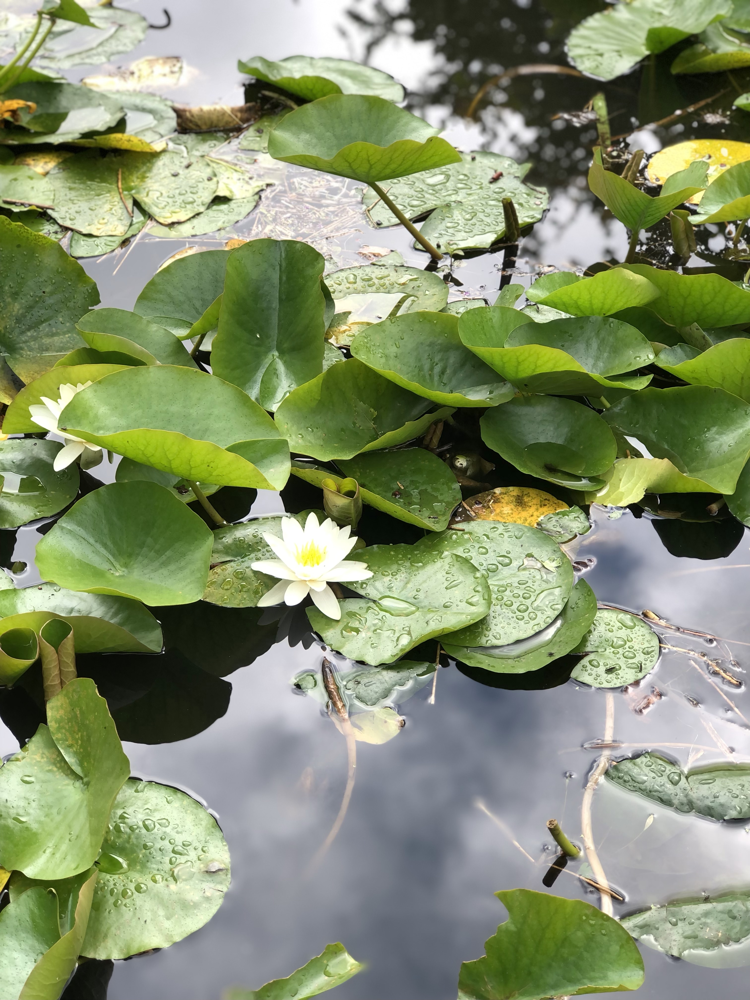
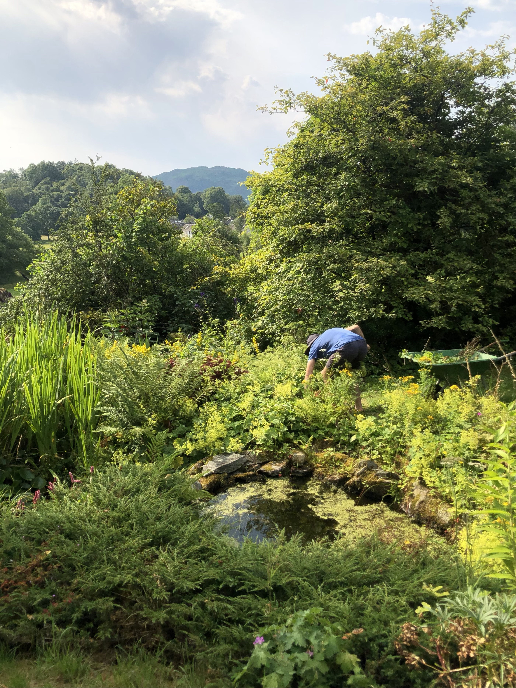
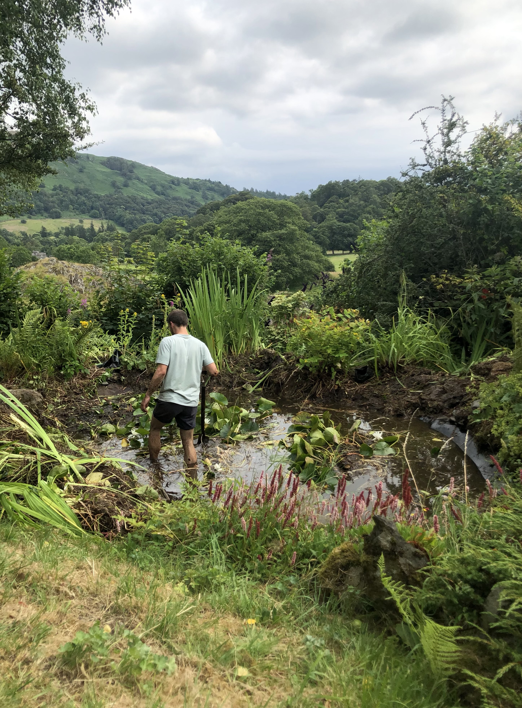
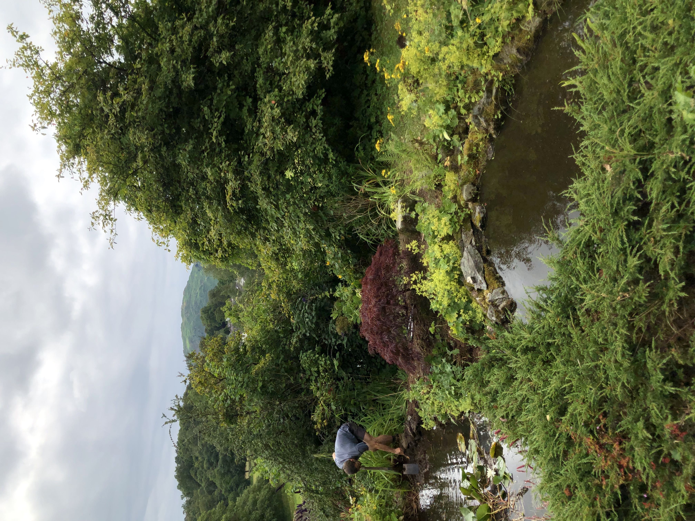
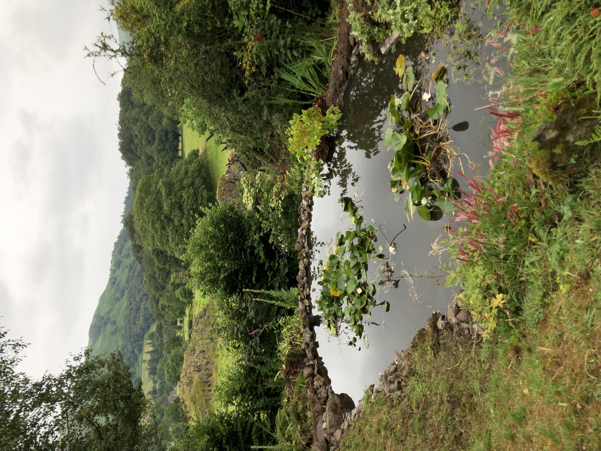

We were recently involved in the restoration of a large ornamental pond in a Grasmere garden in the heart of The Lake District national park. The ponds are situated at the bottom of the gardens, borrowing fantastic views of the surrounding landscape, with Rydal Fell in the distance. Following a period of neglect, the ponds had been swamped by yellow flag iris (Iris pseudacorus), lady's mantle (Alchemilla mollis), brambles (Rubus fruticosus), and ground elder (Aegopodium podagraria).
Careful not to damage the liner (or the water pump and cables), we hacked our way through the thick mass of intertwined iris rhizomes, thinning the Alchemilla mollis, and clearing as we went. We removed the large ferns as they had become out of proportion and also cut back the water lily (Nymphaea alba) to a more managable size. In the process we uncovered a dwarf acer palmatum which was a pleasnt surprise and adds an oriental touch the design.
Following this, any remaining debris on the surface was cleared by hand with a rake. We left all the removed material by the side of the pond over night to allow time for any beasties to make their way safely back into the ponds before composting.
The prostrate conifer was cutback from around the top pond and the stones were naturally re-arranged around the bottom pond to redefine the edges to their original shape.
The pump for the water fall needed a good clean and to finish off we topped up the ponds with a hose.
   